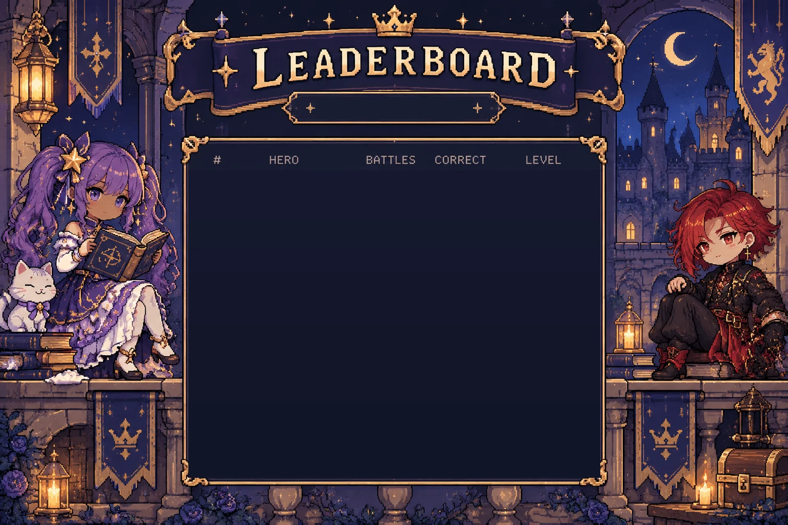

Climb from the dungeon to the top of the tower. Beat monsters with good grammar. Find the stairs together.
Loading the castle…
| # | Hero | Battles | Correct | Level |
|---|
No adventurers yet. Enter the castle to get on the board!
Move with WASD or arrows, or tap the floor. Walk into a monster to battle. Answer with 1–4.

Start a class game to get a code.
Students type it on their screen to join the same castle.
Join the castle with the code
Students appear here as they join.
Everyone must be ready before the class climbs.
| Hero | Level | Accuracy | Practice | Status |
|---|